Setting up IDE for Java Client Development with OLIVE Reference Implementation
Before you do integration with the OLIVE Java API, make sure you have the OLIVE server running. For more details, see Run OLIVE Server. Also, make sure you have Java installed, since you will be writing Java client programs.
Source code and examples of the OLIVE Java API are included in your OLIVE delivery package, in a folder named OLIVE-API-example. At the top level, you should see the following items:
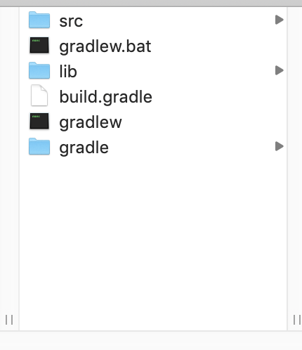
Expand the src folder a few levels down and you should see a folder named client. This folder contains examples of Java client programs which make use of the OLIVE Java API. All examples shown in Example Client Code Using the OLIVE API are included in the folder.
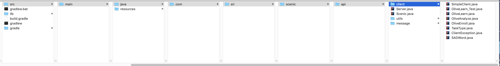
The easiest way to set up your environment to write Java client programs to use the API to access OLIVE services is to use a Java IDE, for example, IntelliJ, which you can download and install a free version of the community edition from here. There are other Java IDE available, we will use IntelliJ to illustrate the integration steps.
Next is bring the scenic-example Java project into your IDE. At the top level of scenic-example, there is a gradlew script. Use it to create a Java project compatible with IntelliJ as follows:
./gradlew idea
This creates a file named OLIVE-API-examples.ipr.
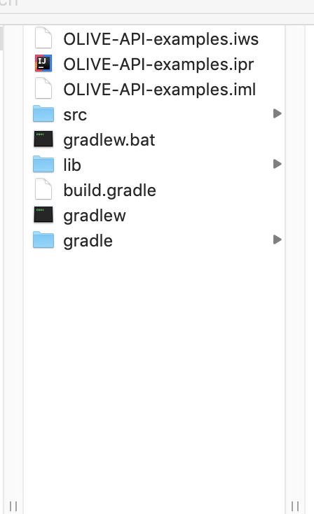
Double click the file to launch the IntelliJ IDE window. Then click the "Import Gradle Project" link at the bottom right of the IntelliJ window to import the project into IntelliJ.
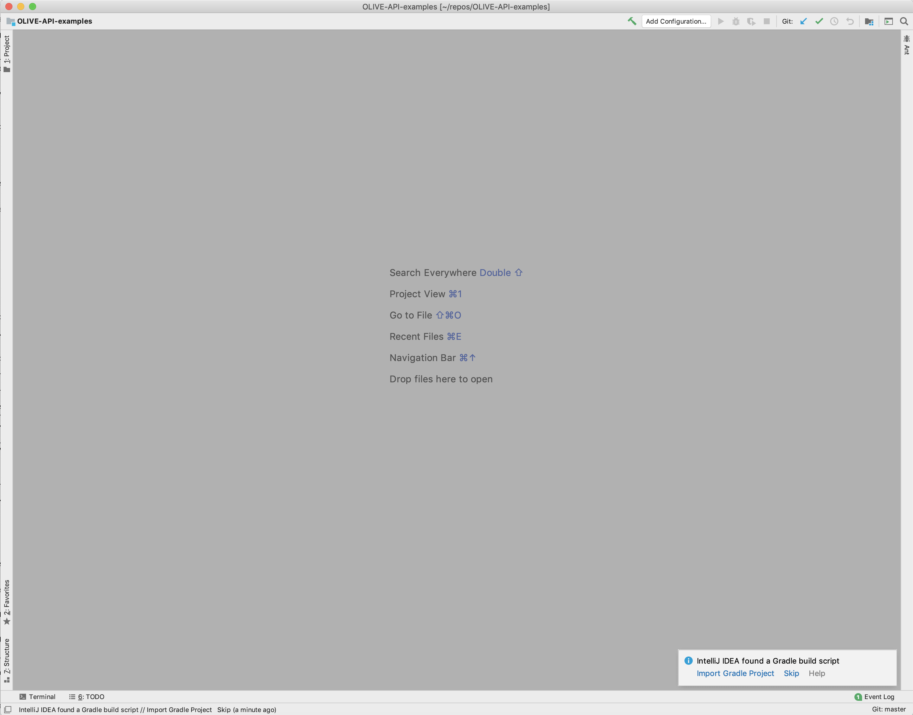
If the IntelliJ system gives you a message to upgrade your gradle build to 2.6, as shown below, click the upgrade link to do the upgrade.
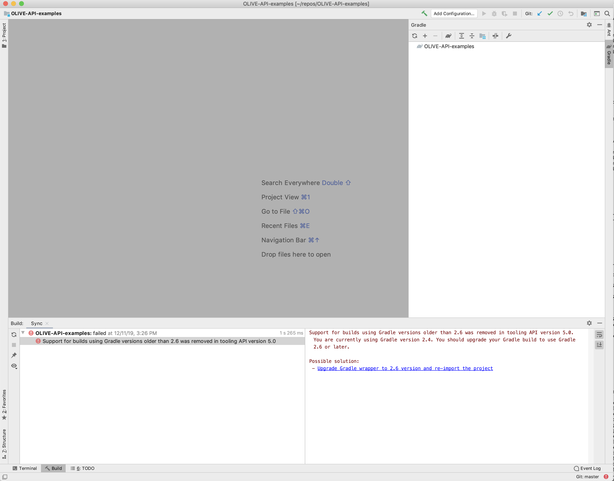
Furthermore, if the IntelliJ system gives you a message to upgrade the gradle wrapper to be compatible with the version of Java you have on your local system, click the upgrade link to do the gradle wrapper upgrade.
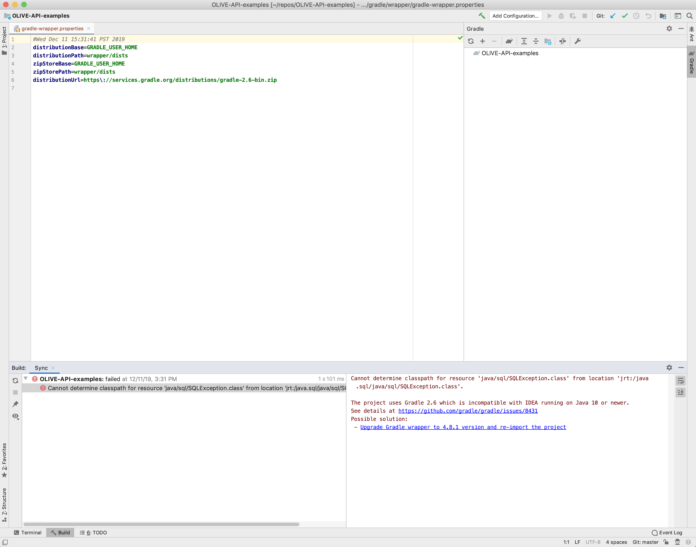
When the upgrades are done, you should see an IntelliJ window with a "CONFIGURE SUCCESSFUL" message.
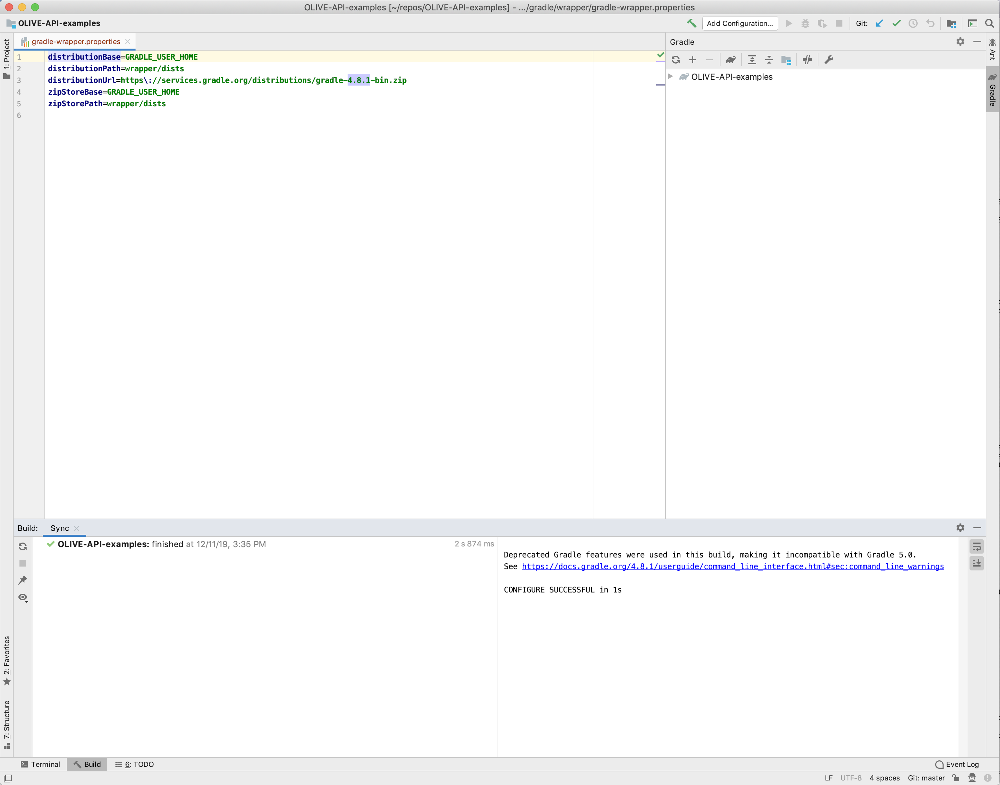
Close the gradle-wrapper.properties file. Click the "Project" folder icon all the way to the top left. This should bring the OLIVE-API-examples project tree into your IDE. Right click on "OLIVE-API-examples" and select "BUILD Module OLIVE-API-examples". This should compile the OLIVE API package and make its resources available.
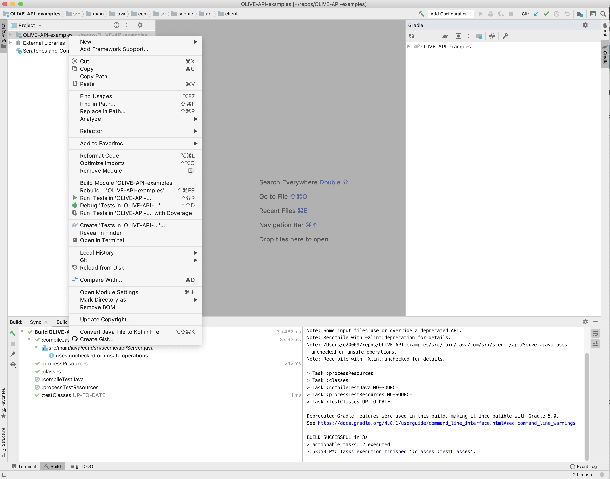
Expand OLIVE-API-examples and you should see this:
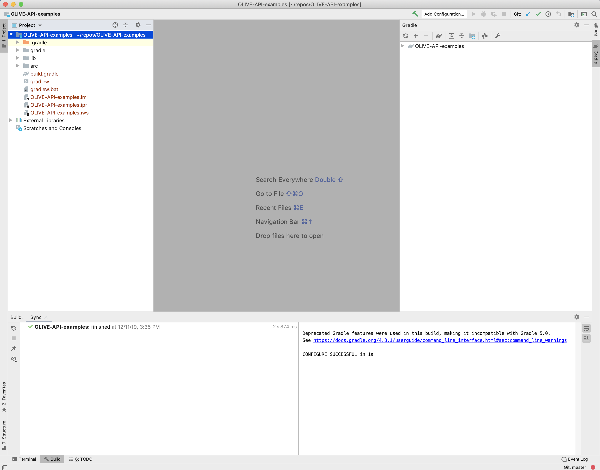
Expand OLIVE-API-examples and navigate a few levels down into src, until you see the Java programs in the client folder. If there are incompatibilites between any source file and the version of gradle being used, the source file will have a little orange icon to its bottom left. To fix the incompatibilities, re-import the project by clicking the "2 arrow" icon in the gradle window. Once the reimport is done, the orange incompatible icons should change into blue compatible icons, as shown below.
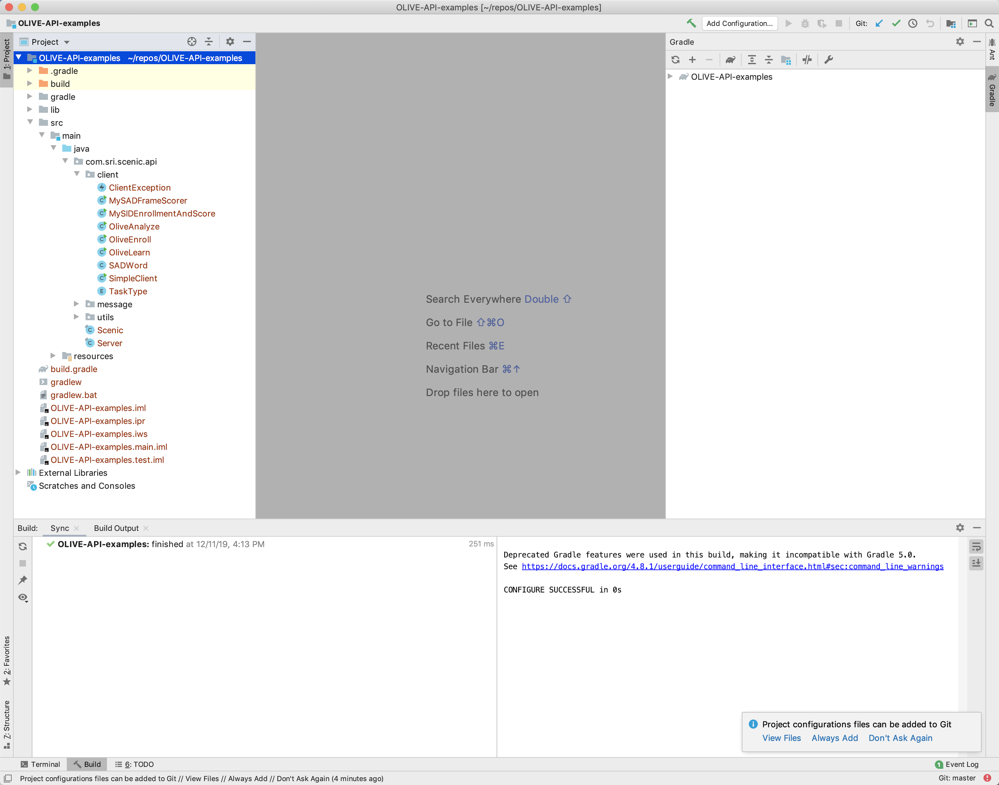
To read or edit MySADFrameScorer.java, double click the file to bring it into the edit window.
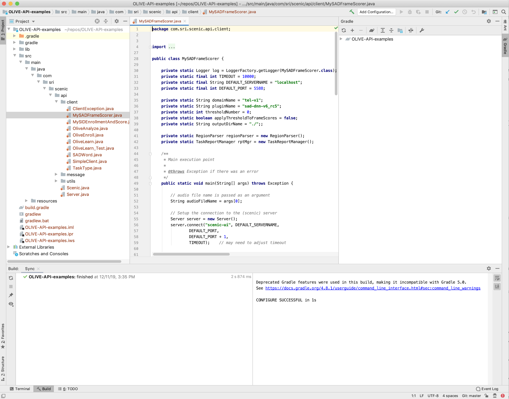
Before you run the program, add a run-time configuration parameter by using the "Add Configuration..." pull-down menu.
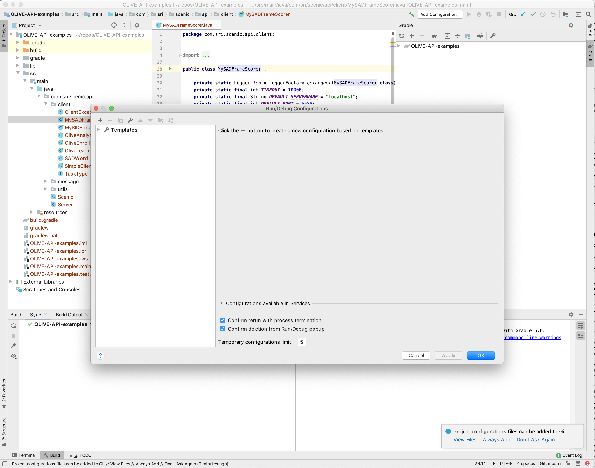
Click "+" to add a new configuration. Name this new configuration "MySADFrameScorer". Choose "MySADFrameScorer (com.sri.scenic.api.client)" for "Main Class", and "OLIVE-API-examples.main" for "Use classpath of module". Enter the location of an audio file on your local system in "Program arguments", as MySADFrameScorer.java takes one argument which is the path to the file for SAD scoring. Click "OK" to save the configuration.
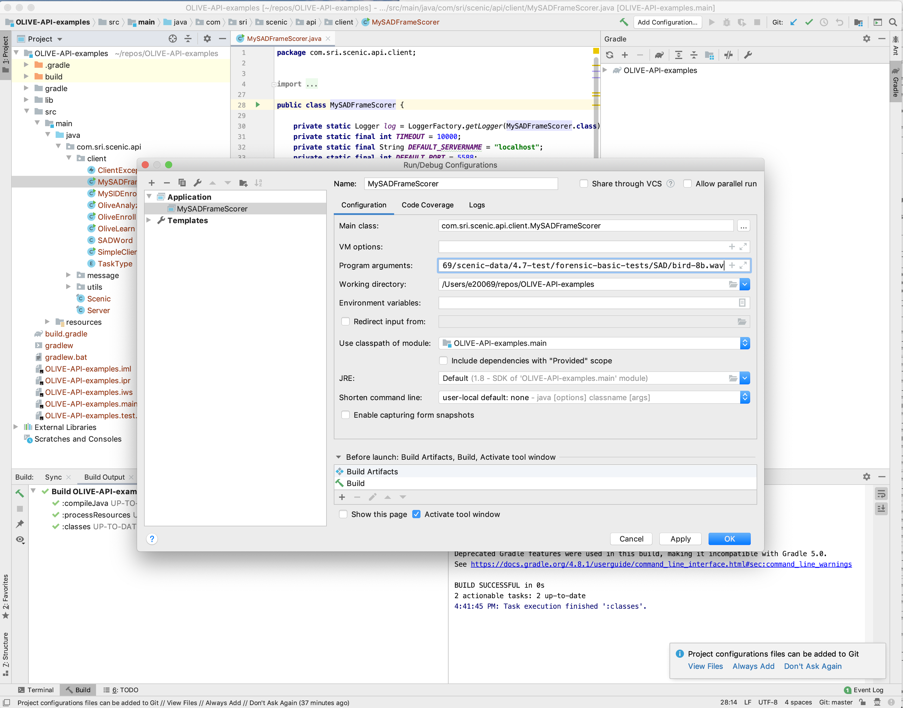
To run the program, right click on the file and choose "Run MySADFrameScorer". The SAD scores returned from the OLIVE server are shown in the bottom right window of the IDE, as seen below.
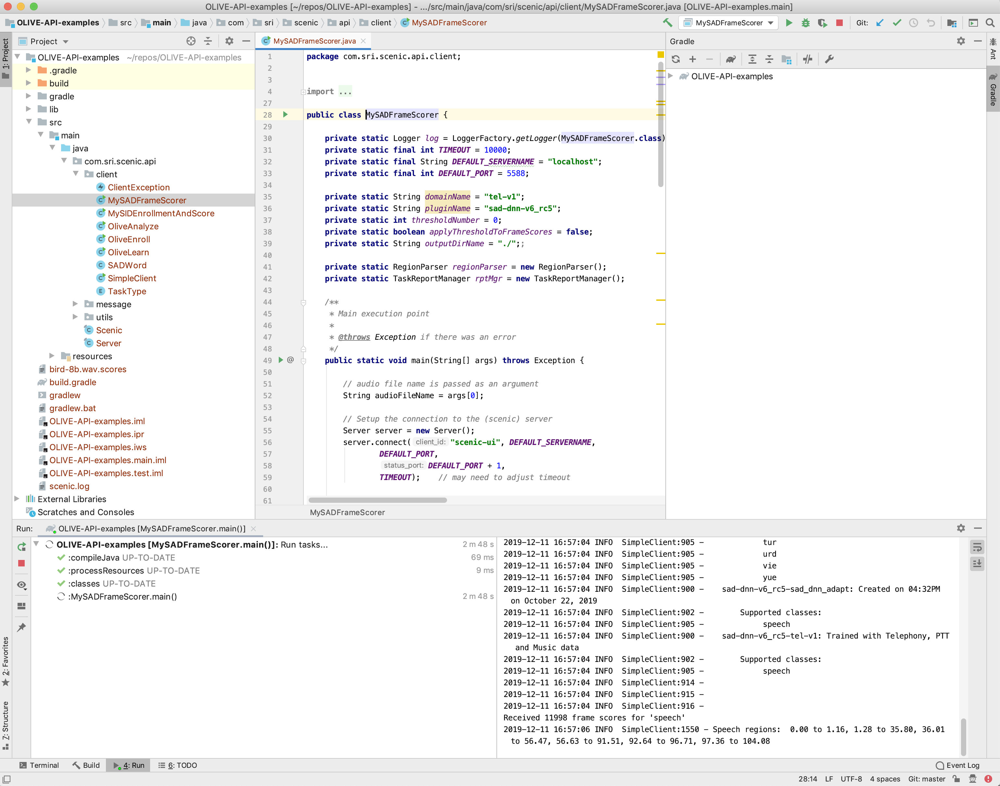
Once you have brought the OLIVE API project into your Java development IDE, a convenient location to place and run your custom built client programs is the same client folder where you find the sample client programs such as SAD scoring request. You can start with any of the example programs in the client folder, modify it to suit your needs, and run it the same way as you would run the SAD scoring request program.